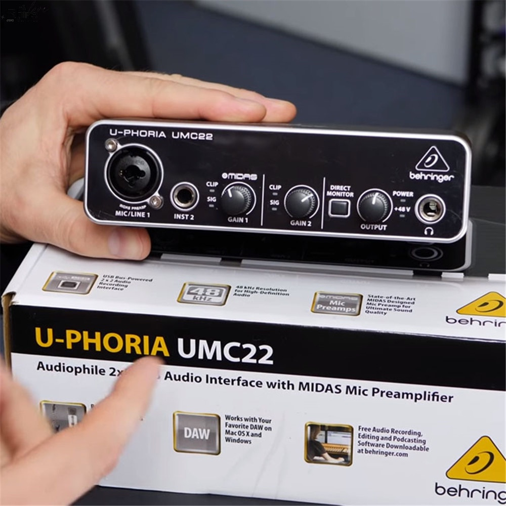
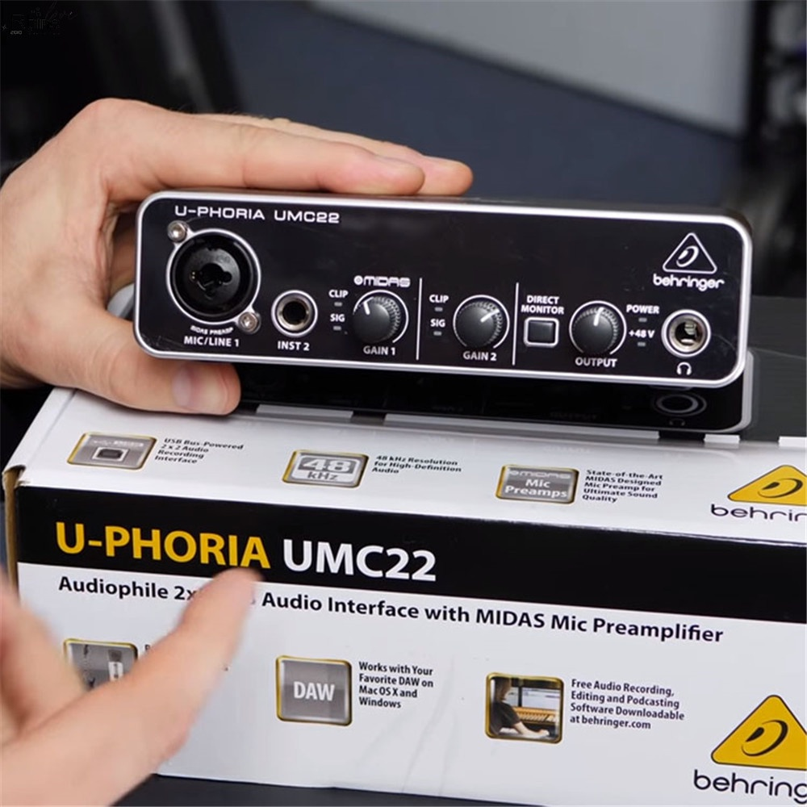

Interface Áudio 2 Canais Behringer Umc22 Usb U-phoria
Sobre
A Behringer UMC22 é uma interface de áudio USB 2x2 para microfones e instrumentos de gravação com ótimo custo-benefício.
Descrição:
• Interface de áudio USB 2x2 para microfones e instrumentos de gravação;
• Resolução de 48 kHz para a qualidade de áudio profissional;
• Compatível com softwares de gravação de populares, incluindo Avid Pro Tools, Ableton Live e Steinberg Cubase;
• 2 entradas / 2 saídas com latência ultra-baixa para o seu computador, suportando Mac OS X, Windows XP ou superior;
• Pré-amplificadores projetados pela Midas;
• Saída de fones com controle de nível e Direct Monitor.
R$785,00 à vista